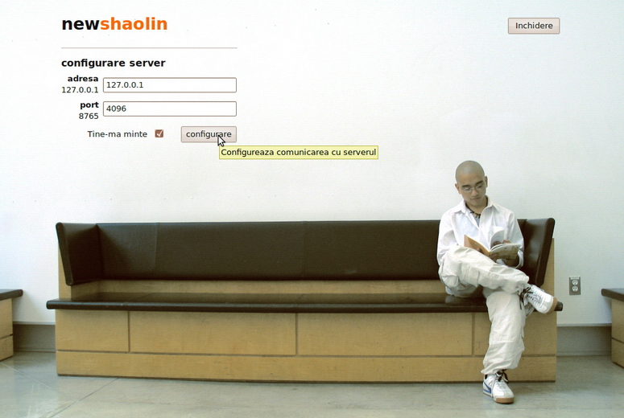
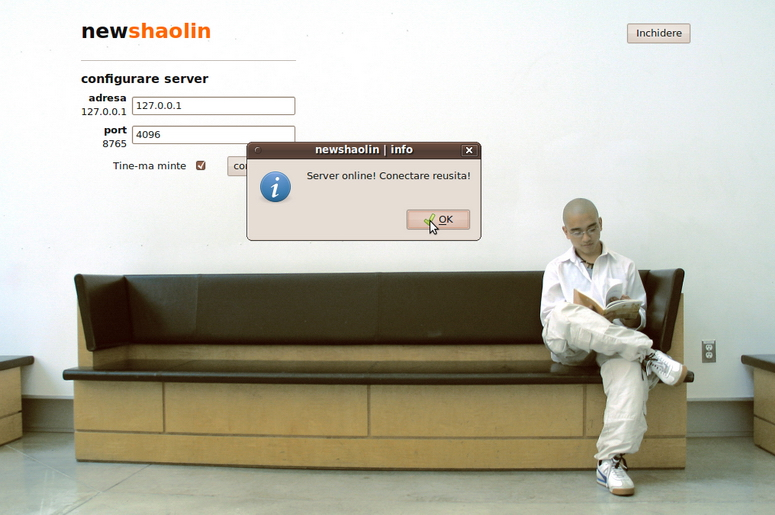
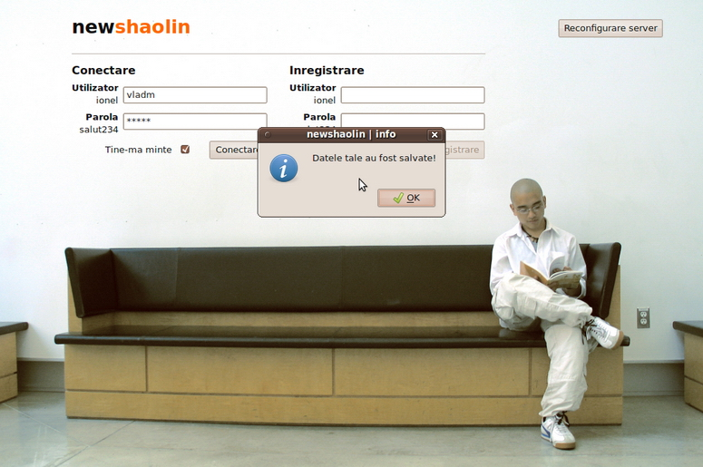

client
Atât serverul, cât şi clientul au fost implementate modular. Fiecare element de conţinut beneficiază de sursele proprii, iar extinderea cu alte elemente de conţinut este facilă. Am izolat secvenţele de cod în care sunt specificate elemente ce pot fi completate ulterior, precum şi pe cele care comunică cu baza de date. Interfaţa clientului este, de asemenea, separată de codul de comunicare şi transfer cu serverul.
structură interfaţă
Interfaţa a fost realizată cu gândul la utilizatorul final, având în vedere aspecte precum ergonomia şi cromatica.
Clientul îl întâmpină pe utilizator cu un formular de configurare a serverului de la care va primi ştiri. Prin această opţiune nu am limitat comunicarea la două entităţi fixe, ci la două entităţi compatibile din punctul de vedere al protocolului aflate oriunde, asigurând transferabilitate:

Imaginea 1. Configurarea serverului
Utilizatorul introduce adresa şi portul serverului.

Imaginea 2. Configurat
Utilizatorul se poate conecta sau înregistra, în ambele cazuri cu opţiunea Ţine-mă minte, întocmai ca la la un sit web:

Imaginea 3. Salvat
structură client
Am implementat obiect clientul, utilizând threaduri şi şabloanele de proiectare2:
- singleton, pentru clasa interfaţă principală
- object factory, pentru elemente de interfaţă curente, disponibile în funcţie de drepturile utilizatorului
Am implementat un thread principal, de comunicare cu serverul. Pentru fiecare obiect, am implementat câte un thread care comunică specializat cu serverul, astfel încât să se conformeze protocolului. Soclul este asociat de o variabilă globală, astfel încât toate threadurile să aibă acces la el.
Clasa principală, singleton, include alte trei clase care reprezintă paginile:
- de configurare a serverului
- de conectare şi înregistrare a utilizatorului
- de vizualizare privată a elementelor de conţinut
Pentru validarea datelor introduse în formulare, am utilizat expresii regulate. Dacă utilizatorul nu a furnizat date valide, nu se activează butoanele de acţiune cu acele date.
Comunicarea cu serverul, specifică protocolului, este realizată la nivelul fiecărui obiect, prin implementare a două metode, de tipul:
- de inițializare a threadului
- de recepționare a mesajului de la thread (metodă realizată cu ajutorul mecanismului semnal-slot din Qt)
Metoda de recepționare a răspunsului decide, în funcție de codul de terminare a threadului, dacă respectiva comandă s-a efectuat cu succes.
O optimizare la nivel de implementare o constituie păstrarea obiectelor de la utilizatorul precedent, pentru care drepturile faţă de cele ale utilizatorului curent erau mai mici.
surse client
Toate sursele clientului pot fi vizualizate aici.
Enumerăm câteva dintre sursele clientului:
communicationthread.cpp conţine implementarea clasei care realizează comunicarea cu serverul după specificațiile protocolului.
globals.cpp conţine funcţii şi declaraţii de variabile globale.
imagesetter.cpp conţine implementarea clasei de încărcare a unei imagini.
intermain.cpp conţine implementarea clasei principale singleton.
lineeditvalidate.cpp conţine implementarea clasei de validare a datelor furnizate de utilizator.
main.cpp conţine funcţia main, care se ocupă cu gestiunea interfeţei.
mythread.cpp conţine implementarea clasei care inițializează comunicarea cu serverul.
mostră cod
Prezentăm un exemplu de fişier sursă, serverconf.cpp:
/*
Copyright 2009, 2010 Sebastian Codrin Ditu, Vlad Manea
This file is part of newshaolin.
newshaolin is free software: you can redistribute it and/or modify
it under the terms of the GNU General Public License as published by
the Free Software Foundation, either version 3 of the License, or
(at your option) any later version.
newshaolin is distributed in the hope that it will be useful,
but WITHOUT ANY WARRANTY; without even the implied warranty of
MERCHANTABILITY or FITNESS FOR A PARTICULAR PURPOSE. See the
GNU General Public License for more details.
You should have received a copy of the GNU General Public License
along with newshaolin. If not, see <http://www.gnu.org/licenses/>.
*/
#include "serverconf.h"
ServerConf::ServerConf(QWidget *parent, const int &wid, const int &hei)
{
// this->setParent(parent);
resize(wid, hei);
setGeometry(0, 0, wid, hei);
this->setWindowTitle("newshaolin | configurare server");
// moveToCenter(this, wid, hei);
//declar QLabel * label-ul si line editul QLineEdit * pentru Server
if (!(title = new QLabel("<h1>new<font color='#ff6600'>shaolin</font></h1><hr />")))
exit(0);
if (!(SLabel = new QLabel("<h3>configurare server</h3>")))
exit(0);
if (!(SAddr = new QLabel("<b>adresa</b><br />127.0.0.1")))
exit(0);
// declar validatorul pentru inputul Adresei
if(!(ValidSAddr = new QRegExpValidator(QRegExp("^([0-9]{1,3})\\.([0-9]{1,3})\\.([0-9]{1,3})\\.([0-9]{1,3})$"), this)))
exit(0);
if (!(LineEditSAddr = new LineEditValidate(ValidSAddr, this)))
exit(0);
if (!(SPort = new QLabel("<b>port</b><br />8765")))
exit(0);
// declar validatorul pentru inputul Portlui
if(!(ValidSPort = new QRegExpValidator(QRegExp("[0-9]+"), this)))
exit(0);
if (!(LineEditSPort = new LineEditValidate(ValidSPort, this)))
exit(0);
// creez butonul de conectare la server
if (!(ClientCconnect = new QPushButton("configurare")))
exit(0);
// setez un tooltip
ClientCconnect->setToolTip("Configureaza comunicarea cu serverul");
// il fac disabled
ClientCconnect->setEnabled(0);
//ii asociez semnalul la click
QObject::connect(ClientCconnect, SIGNAL(clicked()), this, SLOT(ConnectAttempt()));
// daca am ceva scris in fisierul de configurare atunci setez acel text in qline-editurile mele
QFile ServerConfiguration("serverconfigurationfile.txt");
if (ServerConfiguration.open(QFile::ReadOnly))
{
QString string, port;
QTextStream in(&ServerConfiguration);
in >> string;
in >> port;
LineEditSAddr->setText(string);
LineEditSPort->setText(port);
if(!string.isEmpty() && !port.isEmpty())
ClientCconnect->setEnabled(1);
ServerConfiguration.close();
}
else
{
QMessageBox::information(this, "newshaolin | info","Eroare la fisierul de configurare!",
QMessageBox::Ok);
}
//formularul din centru care va contine "serverul"
if (!(form = new QWidget(this)))
exit(0);
//setez dimensiunile pentru form
form->resize(400, 400);
//il incadrez la centru
//moveWidgetToCenter(form, width(), height(), form->width(), form->height());
form->setContentsMargins(100, 20, 0, 0);
if(!( ServerRememberLabel = new QLabel("Tine-ma minte ", this)))
exit(0);
if(!( ServerRemeberButton = new QCheckBox (this)))
exit(0);
if(!(all = new QVBoxLayout()))
exit(0);
if (!(hbox1 = new QHBoxLayout()))
exit(0);
if (!(hbox2 = new QHBoxLayout()))
exit(0);
if (!(vbox1 = new QVBoxLayout()))
exit(0);
if (!(vbox2 = new QVBoxLayout()))
exit(0);
if(!(box = new QVBoxLayout()))
exit(0);
connect(LineEditSAddr,SIGNAL(textChanged(QString)), this, SLOT(onInputEdit()));
connect(LineEditSPort, SIGNAL(textChanged(QString)), this, SLOT(onInputEdit()));
//apelez handleHlabel pentru box
handleHLabel(box, SLabel, hbox1, hbox2, vbox1, vbox2, SAddr, SPort, LineEditSAddr,
LineEditSPort, ClientCconnect, ServerRememberLabel, ServerRemeberButton);
all->addWidget(title);
all->addLayout(box);
all->setAlignment(Qt::AlignLeft | Qt::AlignTop);
form->setLayout(all);
//declar butonul de ClientDconnect ce are ca parinte fereastra ConnectRegiste
if (!(Quit = new QPushButton("Inchidere", this)))
exit(0);
//realizez asocierea cu functia de close on mouse click
QObject::connect(Quit, SIGNAL(clicked()), parent, SLOT(close()));
//setez butonului de ClientDconnect pozitia si dimensiunile
Quit->move(width() - 200, 35);
Quit->setToolTip("Inchide aplicatia client");
Quit->show();
}
ServerConf::~ServerConf()
{
delete serverconf;
delete SLabel;
delete SAddr;
delete SPort;
delete form;
delete LineEditSAddr;
delete LineEditSPort;
delete ClientCconnect;
delete Quit;
delete hbox1;
delete hbox2;
delete vbox1;
delete vbox2;
delete box;
delete all;
delete title;
delete ValidSAddr;
delete ValidSPort;
delete ClientCconnect;
delete Quit;
delete ServerRememberLabel;
delete ServerRemeberButton;
}
void ServerConf::ConnectAttempt()
{
fprintf(stdout, "\ncheck0\n");
if((tmp = (char*)malloc (sizeof(char) * (LineEditSAddr->text().size() + 1))))
adr = tmp;
else
{
fprintf(stdout, "n-am putut aloca, inchid!");
exit(0);
}
memset(adr, 0, sizeof(char)*(LineEditSAddr->text().size() + 1));
for(int i = 0; i < LineEditSAddr->text().size(); i++)
adr[i] = LineEditSAddr->text().at(i).toAscii();
adr[LineEditSAddr->text().size()] = 0;
if(this->ServerRemeberButton->isChecked())
{
QFile ServerConfiguration("serverconfigurationfile.txt");
if (ServerConfiguration.open(QFile::WriteOnly))
{
QTextStream out(&ServerConfiguration);
out << LineEditSAddr->text() + " " + LineEditSPort->text() << endl;
ServerConfiguration.close();
}
else
{
QMessageBox::information(this, "newshaolin | info","Eroare la fisierul de configurare!"
, QMessageBox::Ok);
}
}
fprintf(stdout, "\ncheck1/2\n");
if(!(sd = new int()))
{
fprintf(stdout, "Eroare la alocare de memeorie pentru sd, inchid!");
};
fprintf(stdout, "\ncheck1\n");
// pornirea threadului, executia lui.. cu parametrii din qLineEditurile respective...
if(!(connectThread = new mythread(adr, LineEditSPort->text().toInt(), this)))
{
QMessageBox::information(this, "newshaolin | info","Eroare la crearea threadului,
inchid aplicatia!", QMessageBox::Ok);
exit(0);
}
fprintf(stdout,"\ncheck2\n");
connect(connectThread, SIGNAL(Over(int)), this, SLOT(ConnectAnswer(int)));
connectThread->start();
fprintf(stdout,"\ncheck3\n");
// in functie de codul terminarii threadului, decid daca trimit parintelui semnalul de connected...
// conectarea semnalului de terminare al threadului cu this si slot de verificare al conexiunii..
}
// definesc slotul care, in functie de raspunsul threadului, trimite semnalul conected(1) sau conected(0);
void ServerConf::ConnectAnswer(int rez)
{
// sunt conectat la server ?
if(rez == 1)
{
// da
QMessageBox::information(this, "newshaolin | info","Server online! Conectare reusita!",
QMessageBox::Ok);
//inchid threadul
connectThread->quit();
emit Connected(1);
}
else
{
// nu
QMessageBox::information(this, "newshaolin | info", "Server offline! Conectare esuata!
Reconfigurati!", QMessageBox::Ok);
//inchid threadul
connectThread->quit();
emit Connected(0);
}
}
void ServerConf::onInputEdit()
{
if((LineEditSAddr->validate(LineEditSAddr->text(), LineEditSAddr->text().size()) == QRegExpValidator::Acceptable)
&& (LineEditSPort->validate(LineEditSPort->text(), LineEditSPort->text().size()) == QRegExpValidator::Acceptable))
{
this->ClientCconnect->setEnabled(1);
}
else
{
this->ClientCconnect->setEnabled(0);
}
}
extensibilitate client
Pentru a implementa dinamic drepturile utilizatorului, am utilizat o fabrică de obiecte. Un programator nou poate să restructureze interfaţa după cum doreşte, prin înregistrarea de noi widget-uri cu ajutorul funcţiei AddWidget(id, perm, createfunction) sau prin scoaterea lor prin intermediul funcţiei RemoveWidget(id), unde id este identificatorul documentat al tipului de widget. Definiţiile claselor vor fi globale şi trebuie să existe o funcţie statică de creare a obiectului, de forma QWidget* CreateFunction(QWidget *parent).
sus ↑